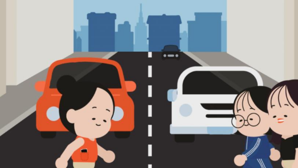
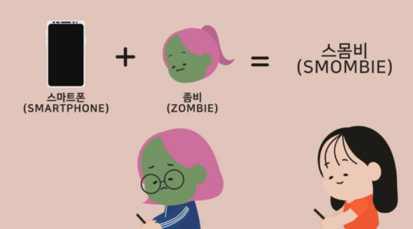
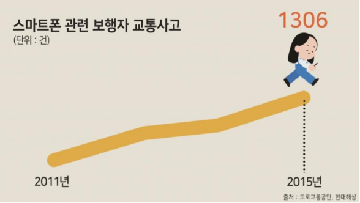
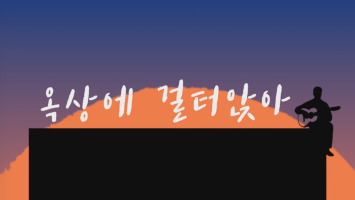

IDENTITY
MOTION GRAPHIC
ADVERTISING
PACKAGING
Motion Graphic
도로 위의 위험한 '스몸비족'
About
작업기간
2020년 11월 ~ 2020년 12월
사용 프로그램
Illustrator / After Effect / Audition

Overview
스몸비족 교통사고의 심각성을 주제로 보행 시 스마트폰 이용이 얼마나
위험한지에 대해 경각심을 심어주기 위해 제작한 모션그래픽입니다.

Stroyline
우리의 눈과 귀를 즐겁게 해주는 스마트폰을 보행 중 이용할 경우의
위험성과 사람들의안전 인식 문제에 대해 설명한다.
보행 중 스마트폰으로 무엇을 하는지, 왜 사고 발생률이 더 높은지에
대해 설명한다. 스몸비 자가 진단을 통해 자신이 얼마나 위험한 사고에
노출되어 있음을 인지시켜주고 그것의 위험성에 대해 알린다.
간단히 실천해볼 수 있는 스마트폰 자제하는 방법을 통해
자신을 보호하고, 보행자 교통사고를 예방한다.

Purpose
스몸비족 교통사고의 문제에 대해 설명하고, 보행 시 스마트폰 이용이
얼마나 위험한지에 대해 알린다. 또한, 이러한 사고를 예방하기 위한
실천 방안을 제시한다.
Target
스마트폰 이용자
Kinetic Typography
옥탑방 - N.Flying
About
작업기간
2020년 5월
사용 프로그램
After Effect / Audition

Overview
하나의 스토리를 본 듯한 느낌이 들도록 가사에 초점에 두어
작업한 키네틱타이포그래피입니다.
가사와 함께 어우러지는 모션을 감상하는 것에 재미 포인트를 두었습니다.